아이의 마음을 먼저 살핍니다.
아이에게 병원은 낯설고 긴장되는 공간일 수 있습니다.
아이오션병원은 아이의 눈높이에서 천천히 설명하고, 아이가 편안함을 느낄 수 있도록 세심하게 진료합니다.
안녕하세요. 아이오션병원입니다.
아이오션병원은 아이가 아프지 않을 때에도
성장하며 새로운 변화를 마주할 때에도
언제든 편안하게 찾을 수 있는 병원이 되고자 합니다.
무엇보다 아이의 작은 변화에도 귀 기울이고,
보호자의 마음까지 헤아리는 따뜻한 진료와
성장의 모든 순간을 함께 바라보는 전문적인 진료를 통해
아이에게는 편안한 병원,
보호자에게는 믿을 수 있는 병원이 되겠습니다.
아이의 건강한 오늘이 행복한 내일로 이어질 수 있도록
아이오션병원이 늘 곁에서 함께하겠습니다.
감사합니다.
- 아이오션병원 공동대표원장 -


아이에게 병원은 낯설고 긴장되는 공간일 수 있습니다.
아이오션병원은 아이의 눈높이에서 천천히 설명하고, 아이가 편안함을 느낄 수 있도록 세심하게 진료합니다.
아이의 건강을 가장 가까이에서 지켜보는 보호자의 작은 걱정과 궁금증까지 세심하게 듣습니다.
충분한 소통을 통해 함께 고민하는 진료를 이어갑니다.
지금 나타난 증상만 바라보는 것이 아니라 아이의 성장과 발달 과정까지 함께 살핍니다.
건강한 오늘이 건강한 내일로 이어질 수 있도록 돕겠습니다.
어렵고 복잡한 의료 정보를 보호자가 이해하기 쉽도록 알기 쉽게 설명하고,
아이에게 필요한 진료를 함께 찾아갈 수 있도록 안내합니다.
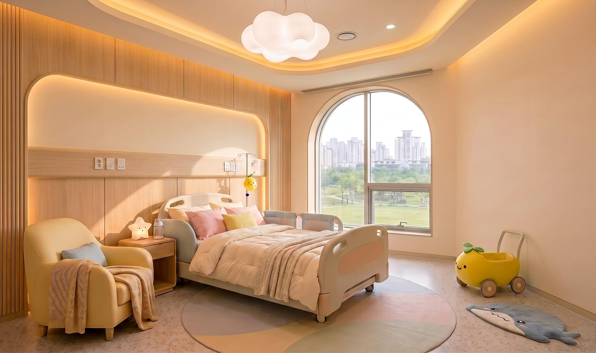
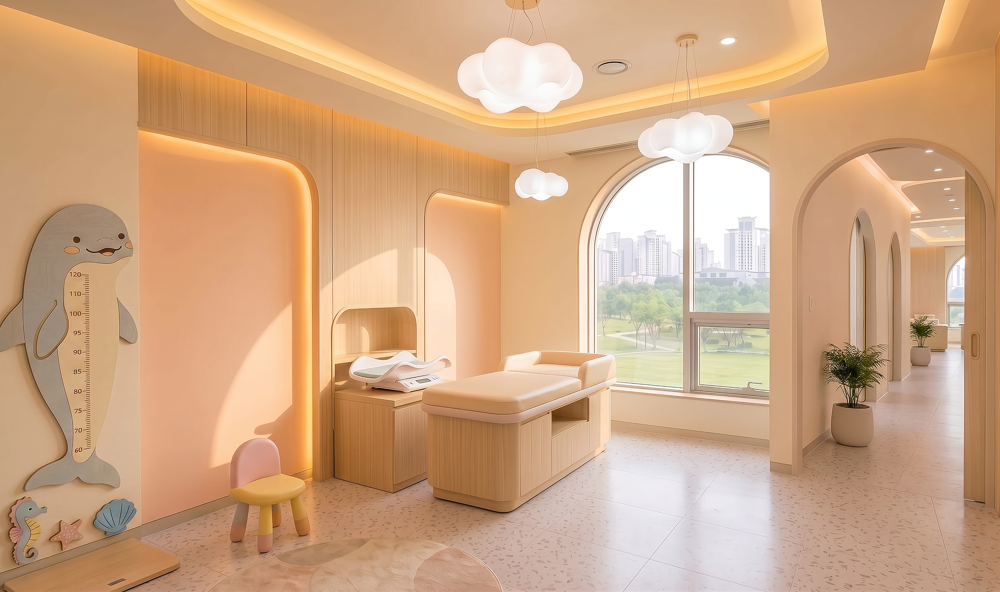
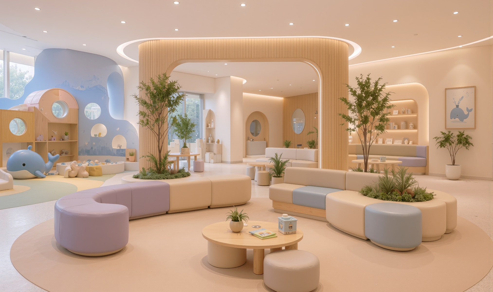
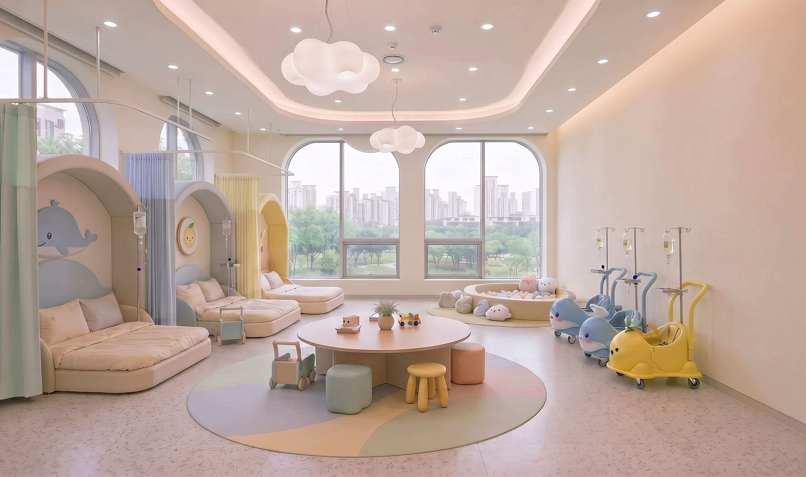
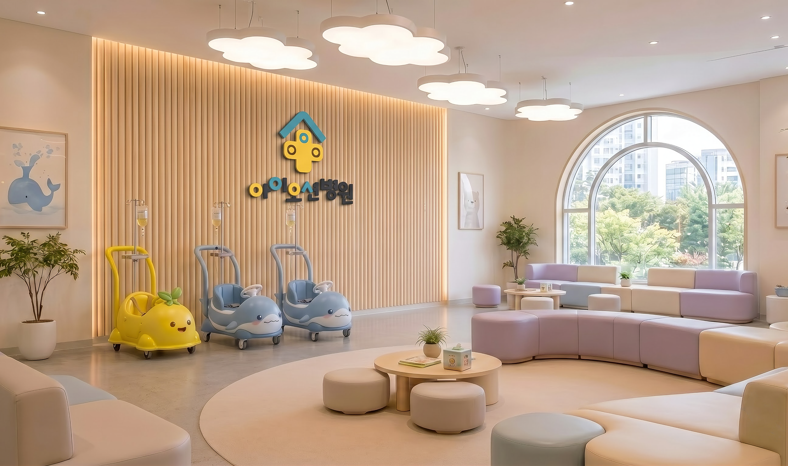
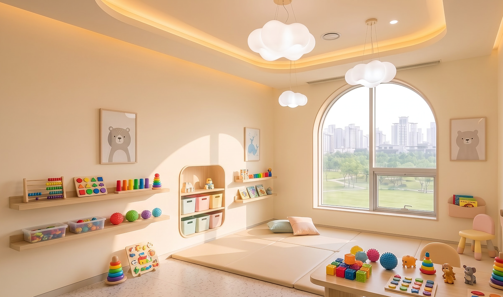
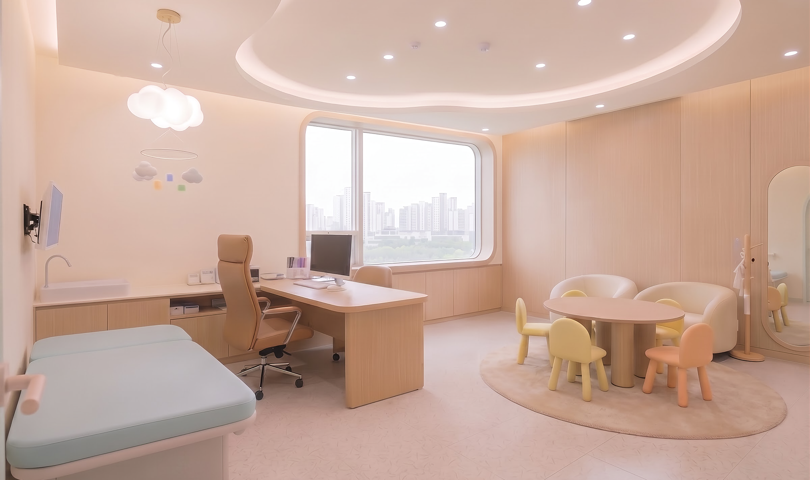
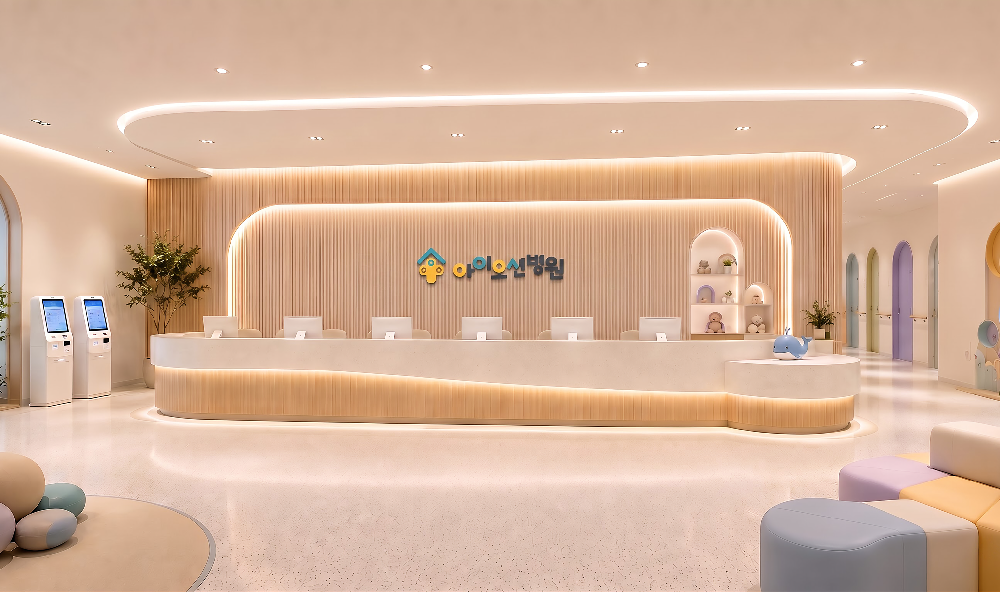
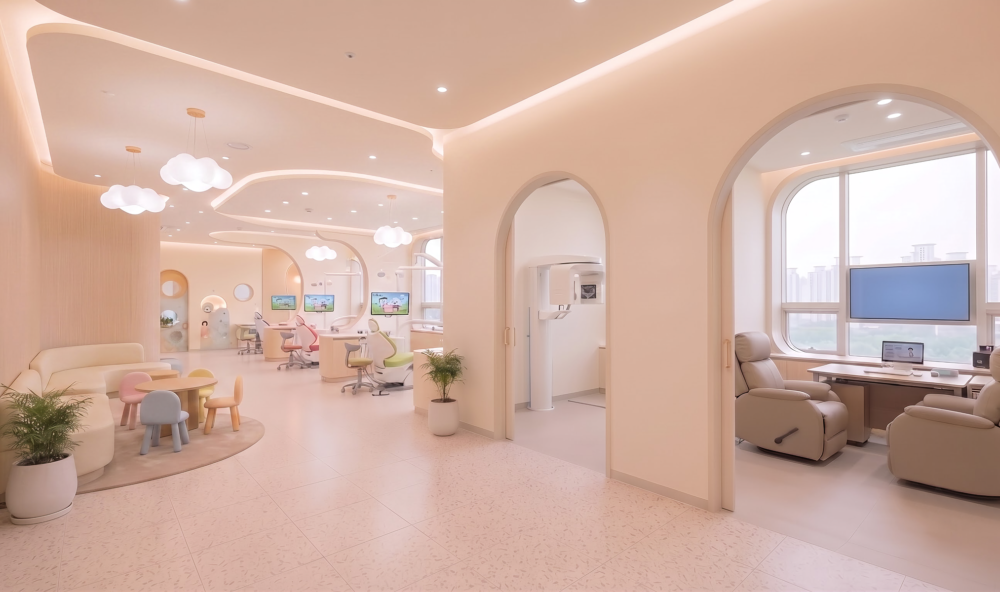
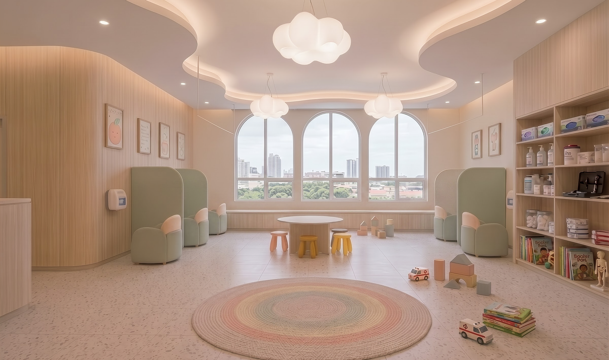
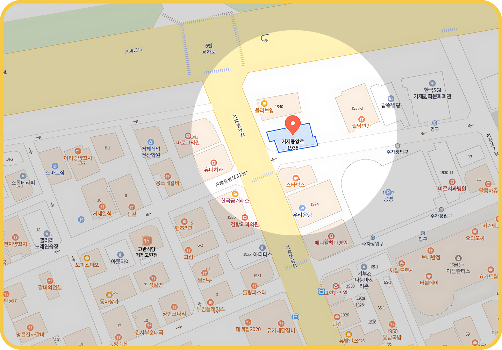


경남 거제시 거제중앙로 1938(고현동), [아이오션병원]

‘중앙공영주차장’ 정류장 하차 후 도보 1분
스타벅스 거제 고현점 옆 건물입니다.

건물 지하 1~2층 주차장 이용 가능합니다.
* 내원 고객님들은 차량번호 등록 시 무료 주차 가능
* 주차장과 엘리베이터가 바로 연결되어 있어 유모차 이동 편리

한국대학교 의과대학 졸업
한국대학교 의과대학원 석사
한국대학교병원 소아청소년과 전공
한국대학교병원 인턴 수료
한국대학교병원 소아청소년과 전공의 수료
한국대학교병원 소아청소년과 임상강사
한국대학교병원 소아청소년과 진료교수
현) 아이오션병원 소아청소년과 원장
대한소아청소년과학회 정회원
대한소아내분비학회 정회원
대한소아알레르기호흡기학회 정회원
대한대학교 의과대학 졸업
대한대학교 의과대학원 석사
한국대학교병원 소아청소년과 전공
한국대학교병원 인턴 수료
한국대학교병원 소아청소년과 전공의 수료
한국대학교병원 소아청소년과 임상강사
한국대학교병원 소아청소년과 진료교수
현) 아이오션병원 소아청소년과 원장
대한소아청소년과학회 정회원
대한소아소화기영양학회 정회원
대한소아내분비학회 정회원
대한대학교 치과대학 졸업
대한대학교 치의학대학원 석사
대한대학교 치과병원 소아치과 전공
대한대학교 치과병원 인턴 수료
대한대학교 치과병원 소아치과 레지던트 수료
한국대학교 치과병원 소아치과 임상진료
한국대학교 치과병원 소아치과 외래교수
현) 아이오션병원 소아치과 원장
대한소아치과학회 정회원
대한치과의사협회 정회원
대한대학교 의과대학 졸업
대한대학교 의과대학원 석사
한국대학교병원 소아청소년과 전공
한국대학교병원 인턴 수료
한국대학교병원 소아청소년과 전공의 수료
한국대학교병원 소아청소년과 임상강사
한국대학교병원 소아청소년 행동발달센터 임상진료
한국대학교병원 소아청소년과 진료교수
현) 아이오션병원 소아청소년정신과 원장
한국자폐학회 정회원
대한소아청소년과학회 정회원
대한소아청소년정신의학회 정회원
대한소아청소년행동발달증진학회 정회원
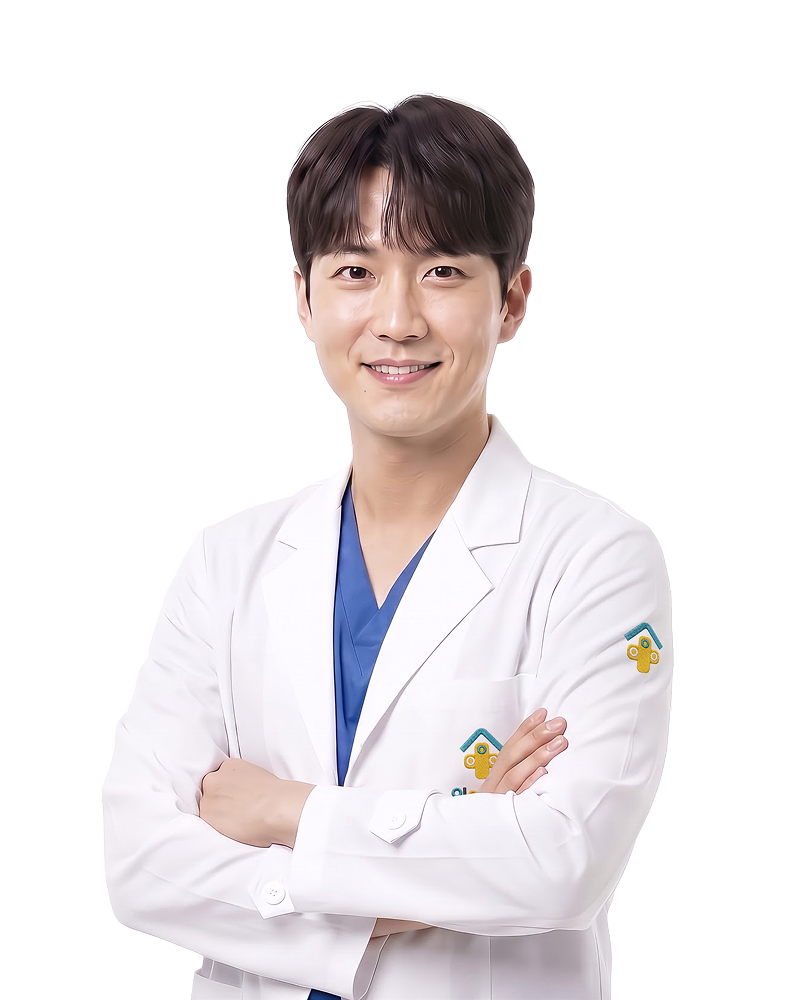
아이오션병원에는 아이들이 병원을 조금 더 편안하고 친근하게 느낄 수 있도록 함께 하는 두 친구가 있습니다.
아이들을 따뜻하게 돌보는 상괭이 의사 '괭이'
와
아이들의 모습을 담은 유자 아이 '유찌'입니다.
서로 다른 곳에서 왔지만, 아이들을 생각하는 따뜻한 마음은 꼭 닮아있습니다.
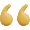
아이들의 건강을 꼼꼼하게 지켜주는


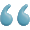
씩씩하게 병원에 온